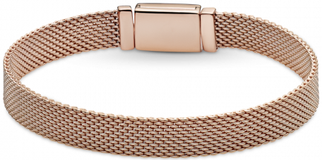
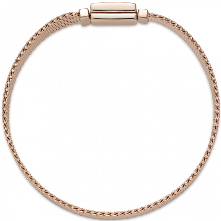
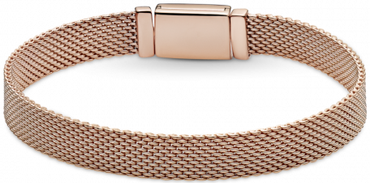
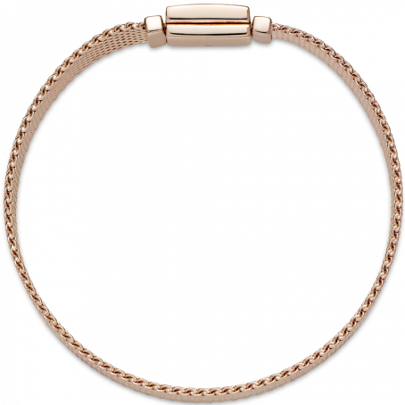

Описание
Браслет Reflexions покрытый золотом 585 пробы с оригинальным и стильным замком – диагональный рисунок сочетается с камнями кубического циркония в технике паве.
Вставка: Цирконий
Браслет Reflexions
12 990 руб.